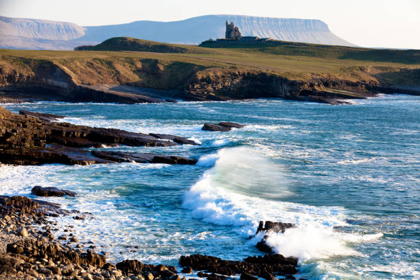

This is a colege project. Sligo is a town in County Sligo, Republic of Ireland. It is not the largest town in the country but is the second largest rural area in Connacht after Galway city. It is home to Sligo Rovers F.C. who play in the League of Ireland Premier Division and won the League in 2012 it also homes Sligo G.A.A team. Sligo Rugby Club is in Strandhill. Sligo has a population of around 20,000 and has many tourist attractions. Sligo is at the end of the railway line from Dublin.
